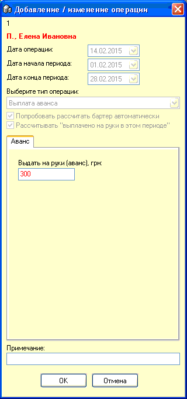
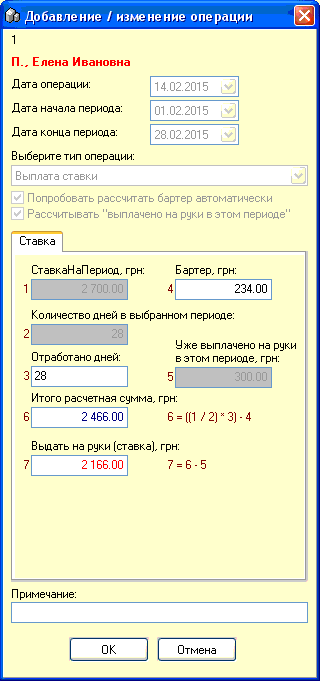
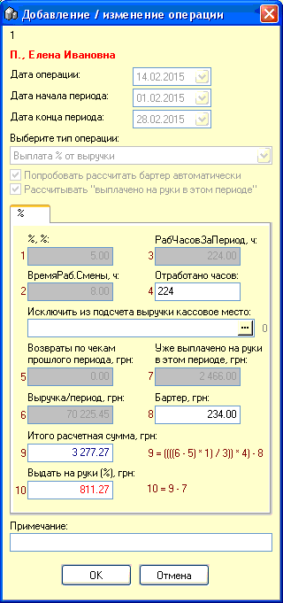

В программе приняты 3 типа (ставка, процент,
ставка+процент) оплаты труда сотрудников, рассмотрим значение
каждого типа.
1. Ставка. В карточке сотрудника
указана ставка за месяц, грн и продолжительность рабочей смены, час.
Соответственно при начислении такой выплаты необходимо указать количество
фактически отработанных дней.
2. Процент. Вычисляется выручка
предприятия за вычетом возвратов, также возможно исключить из подсчета
определенное кассовое место. Далее вычисляется указанный в карточке сотрудника
% от данной суммы и берется за фактически отработанное количество
часов.
3. Ставка+процент. Данный тип
позволяет начислять сотруднику выплаты по обеим предыдущим
схемам.
Также необходимо принимать во внимание следующие
нюансы начисления зарплаты:
1. Сотрудник может по своей карте сотрудника
брать по бартеру (с таким типом оплаты чека) товар в счет
зарплаты, причем в карточке сотрудника указывается, делает он это по
закупочной или по розничной цене.
2. Сотрудник может попросить выплатить ему
аванс.
Теперь рассмотрим как работа с данными типами
выплат и нюансами начисления реализована в специальном окне
добавления/редактирования финансовых операций, в форме взаиморасчетов с
сотрудниками. В верхней части этой формы вначале указывается дата начала/конца
периода начисления - обычно это месяц, затем выбирается тип операции. Для всех
сотрудников доступен "Аванс", а вот остальные типы "Выплата ставки" или
"Выплата % от выручки" доступны только тем, у кого это разрешено в карточке
сотрудника.
Для начала начислим сотруднику аванс 300
грн.:

Флажок "Попробовать рассчитать бартер
автоматически" устанавливайте, если хотите, чтобы компьютер сам отбирал
сколько товара было взято в счет зарплаты по карте этого сотрудника, учитывая
по рознице или по закупке, как указано в свойствах карточки этого сотрудника.
Снимите флажок, если хотите указать это число вручную или если
уже вычитали бартер из выплат в этом периоде этому сотруднику.
Флажок "Рассчитывать "выплачено на руки в этом
периоде" - установите, чтобы компьютер автоматически вычитал сумму уже
выплаченного в этом периоде этому сотруднику из суммы, которая начисляется в
текущем расчете.
Теперь добавим операцию начисления
зарплаты:

В окошке "3" указывайте число фактически
отработанных дней за выбранный период.
В следующем примере рассчитаем сумму % от выручки
с учетом предыдущих выплат, бартер подсчитываем автоматически:

В окошке "4" укажите фактическое количество
отработанных сотрудником часов.